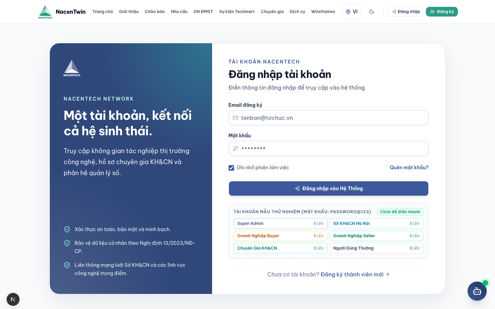

Màn hình 1.1
🌐 Người Dùng Đại Chúng 🛒 Bên Mua (Doanh Nghiệp / DNNVV) 🏭 Bên Bán (Nguồn Cung Công Nghệ) 🎓 Chuyên Gia KH&CN 💡 Doanh Nghiệp ĐMST 🏛️ Cán Bộ Sở KH&CN Tỉnh 👑 Quản Trị Tối Cao 📋 Kiểm Toán Viên Độc Lập
1.1. Đăng Nhập Hệ Thống
- Địa chỉ truy cập:
http://localhost:3000/login - Mục đích: Xác thực người dùng bằng Email/Mật khẩu hoặc qua SSO, tự động định tuyến phiên làm việc vào đúng Workspace tương ứng theo vai trò.
- 👤 Vai trò thực hiện:
TẤT CẢ VAI TRÒ(PUBLIC_USER,BUYER,SELLER,VERIFIED_EXPERT,INNOVATION_ENTITY,PROVINCIAL_ADMIN,SUPER_ADMIN) - 🏷️ Phạm vi áp dụng: Toàn hệ thống
- 🔑 Quyền hạn: Đọc & Khởi tạo phiên làm việc (Session Initialization)

🎯 Các yếu tố trọng điểm & Bộ lọc tác nghiệp:
- 🔍 Bộ chọn vai trò đăng nhập thử nghiệm (Dev/Demo Switcher): Cho phép chuyển nhanh danh tính test: Super Admin, Sở KH&CN Hà Nội, Doanh nghiệp ĐMST Rạng Đông, Chuyên gia đầu ngành.
- ⚡ Kiểm tra đầu vào (Input Validation): Tự động phát hiện định dạng email hợp lệ, cảnh báo CapsLock, ẩn/hiện mật khẩu.
- 🛡️ Bảo vệ chống tấn công Brute-force: Khóa tạm thời 15 phút nếu nhập sai quá 5 lần liên tiếp.
Các bước thao tác:
- Nhập địa chỉ Email và Mật khẩu tài khoản đã đăng ký.
- Tích chọn "Ghi nhớ đăng nhập" nếu sử dụng thiết bị cá nhân an toàn.
- Bấm "Đăng nhập" $\rightarrow$ Hệ thống tự động chuyển tiếp về Workspace phù hợp theo vai trò (Buyer, Seller, Expert, Gov, Admin).
- Nếu quên mật khẩu: Nhấp "Quên mật khẩu?" để nhận liên kết khôi phục qua email.